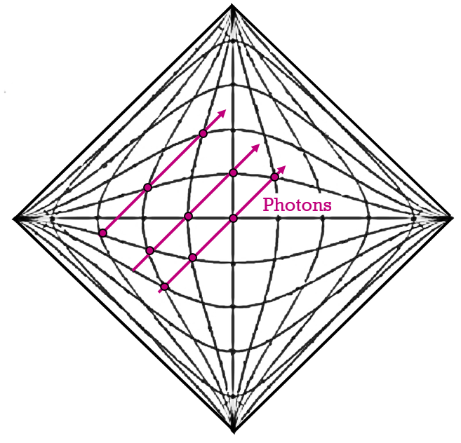
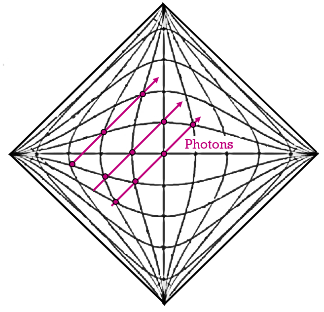
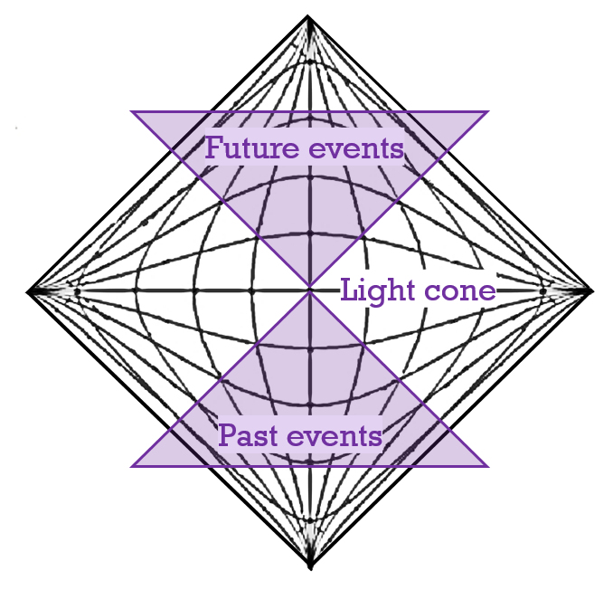
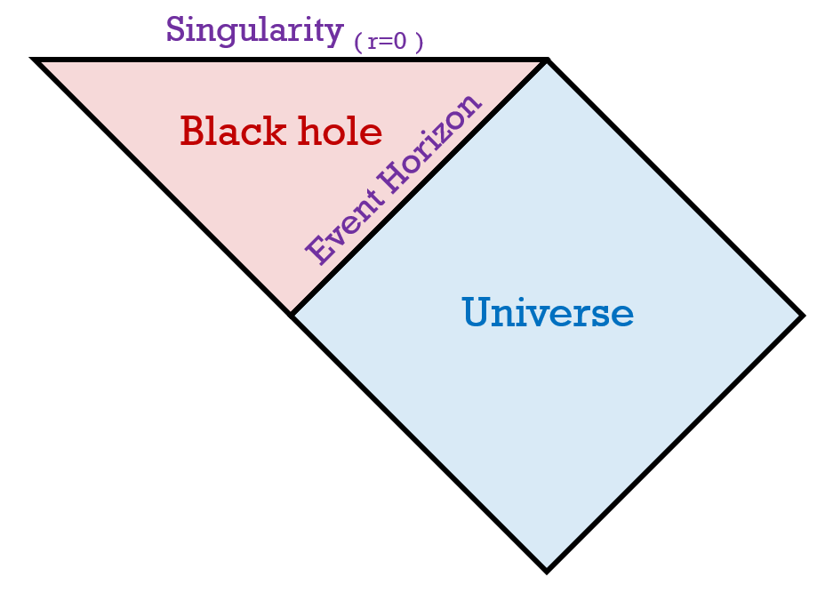

Carter-Penrose diagrams are diagrams that represent spacetime. The x-axis is space, and the y-axis is time. This is a diagram which shows all of space and all of time, and it is compressed infinitely towards the sides. This infinite compression of spacetime is very helpful for showing boundaries of black holes (which stretch space and time infinitely). 

The carter penrose diagram is shown on the right. The axes are shown; the horizontal axis is space, and the vertical is time. The edges of the square become infinitely long.
Also, on a normal spacetime diagram, light travels at a 45 degree line. In the Carter-Penrose diagram, despite the transformation, all 45 degree lines are preserved.

In spacetime diagrams, there's something called a light cone. These light cones describe what past events could have affected the observer, or what future events the observer could possible affect. The lights cones are 45 degree lines behind and in front of the observer, which is at the origin. These light cones are important because they describe all the possible future events that the observer can be in.

To give an example, the penrose diagram of a schwarzschild black hole is on the left. It is the same diagram, just without the gridlines. There is an extra section added (red), which is the black hole. The event horizon is the boundary separating these two regions.
The event horizon is placed in the edge, where there is infinite amount of space and time. This is why Penrose diagrams are so useful: at an actual event horizon, space and time get infinitely stretched. To learn more on the penrose diagrams of the different black holes, go here.